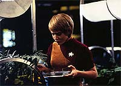
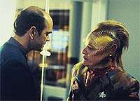
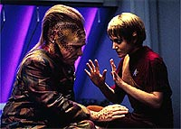
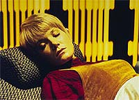

|
MANCHETE
DO EPISDIO
Histria explica ciclo reprodutivo dos
Ocampas, custo da
dignidade de Kes
Episdio
anterior | Prximo
episdio
Sinopse:
Data Estelar: 48921.3.
A Voyager detecta uma nuvem de formas de vida naturais do espao e
vai investigar. A nuvem emite ondas eltricas, que causam uma
maturao hormonal precoce em Kes.
A jovem entra no estado de elogium, quando o corpo das fmeas
Ocampas se prepara para a fertilizao. Acontece que o Elogium
ocorre apenas uma vez na vida, o que leva Kes a chamar Neelix para
conceber uma criana.
 Os
relacionamentos comeam a aflorar na nave e Janeway se preocupa com
o tipo de ambiente que os oficiais podem fornecer para qualquer
criana, viajando por um territrio extremamente violento e
hostil.
De repente a Voyager atacada por uma das formas de vida da nuvem,
que a considera uma "rival sexual". Por sugesto de
Chakotay, a nave consegue escapar, ao reproduzir o comportamento
subserviente das criaturas menores, sinalizando que a Voyager no
est competindo para se reproduzir.
Ao escapar da nuvem, Kes volta ao normal. O Doutor acredita que a
Ocampa poder passar pelo elogium novamente, desta vez de forma
natural. A capit Janeway tambm fica sabendo que uma de suas
tripulantes, a alferes Wildman, est grvida.
Comentrios:
Quem achava o Pon Farr dos
Vulcanos esquisito ainda no tinha visto "Elogium". O
episdio, que lida principalmente com o fato de Kes estar entrando
no cio, traz boas e ms notcias.
 A
boa que os produtores resolveram fazer um episdio sobre um tema
importante para a srie --como seriam as relaes interpessoais
entre os tripulantes da Voyager, uma nave isolada do outro lado da
Via Lctea, sem outros humanos por perto.
Nesse tema entram questes fundamentais, como a necessidade psicolgica
dos tripulantes de manter um relacionamento afetivo e a
possibilidade de que toda a tripulao talvez precise ser substituda
para cumprir a meta de levar a nave de volta Terra, em razo do
longo perodo necessrio viagem.
A m notcia que eles aproveitaram esse tema para ficar fazendo
palhaadas o tempo todo. No h razo para imaginar que os
rituais de acasalamento aliengenas sejam semelhantes com o dos
humanos, mas triste notar que os roteiristas se usam deste artifcio
para destruir a dignidade de uma personagem.
 Kes,
que j no vinha bem das pernas em seu desenvolvimento como
personagem, foi a vtima do tombo. Cenas de pura comdia pastelo
foram feitas com a atriz, como a em que Neelix a leva para a
enfermaria e ela comea a comer desesperadamente as flores que ele
trouxe para ela. Pattico.
Alis, se a Kes dependesse de um humano para procriar, ela ia
morrer solteira. Durante o "elogium", ela solta uma gosma
amarela pela mo, come besouros, ganha olheiras incrveis, age
como uma troglodita e sua como ningum. Aposto que se o Paris visse
isso, pararia de dar em cima dela!
A outra problemtica do episdio, o enxame de criaturas espaciais,
tambm no rende muito. meio ridculo ver a Voyager rodopiando
e ficando azul para acalmar a ira de uma das criaturas. o tipo da
coisa que pode at fazer sentido, mas acaba se tornando mais uma
piada de mau gosto do episdio.
Entre as poucas cenas que efetivamente deram certo esto os ataques
de cimes de Neelix com relao a Tom Paris, o confronto na
enfermaria entre o talaxiano e o Doutor e os conselhos de Tuvok
sobre paternidade.
 Alis,
a questo das responsabilidades de assumir uma paternidade poderia
ter sido melhor trabalhada. O tema era bom, mas acabou no levando
a lugar nenhum. Um uso muito mais apropriado do tema se deu na stima
temporada da srie, com B'Elanna Torres e Tom Paris como
protagonistas, no episdio "Lineage".
No fim das contas, "Elogium" tenta abraar um tema
muito amplo e acaba no se agarrando em nada. Como um segmento cmico,
at que funciona, mas o preo das piadas muito caro: a
dignidade de um personagem, no caso, Kes.
Citaes:
Janeway - "In the future,
if I have any questions about mating behavior, I'll know where to
go."
("No futuro, se eu tiver dvidas sobre comportamento
reprodutivo, j sei a quem recorrer.")
Tuvok - "It appears that we've lost our sex appeal, Captain."
("Parece que perdemos nosso sex appeal, capito.")
Trivia:
 "Elogium" outro episdio
produzido na primeira temporada e adiado para o segundo ano.
"Elogium" outro episdio
produzido na primeira temporada e adiado para o segundo ano.
Este episdio foi o primeiro esforo
de Kenneth Biller em Voyager, na poca como editor executivo
de histrias. No final da srie, durante a stima temporada
(2000-2001), Biller passou a ser o produtor-executivo da srie, ao
lado de Rick Berman.
Saiba mais sobre os Ocampas:
Civilizao humanide do quadrante Delta da galxia, os Ocampas
tm um perodo de vida de aproximadamente nove anos terrestres. A
comunidade Ocampa comunica-se tanto por telepatia quanto
verbalmente. Lendas dizem que no passado distante os Ocampa tiveram
muito mais poderes telepticos e mentais.
A civilizao Ocampa quase foi destruda h mil anos atrs,
quando seu planeta (o quinto do sistema solar Ocampa) foi
ecologicamente devastado, quando um grupo de exploradores de outra
galxia acidentalmente contaminou a atmosfera, eliminando todas as
partculas nucleognicas (responsveis pela aglutinao de
vapor d'gua em nuvens).
Estes mesmos exploradores aceitaram a responsabilidade pelo desastre
e deixaram dois de sua raa para cuidar do povo Ocampa. Um deles
foi conhecido como o Guardio ("Caretaker")
e criou uma cidade subterrnea para o povo.
Por mais de 500 geraes, o Guardio providenciou energia para a
cidade a partir de sua base em uma estrutura espacial de onde
protege o povo Ocampa de intrusos, como os Kazon-Ogla (como visto em
"Caretaker",
o episdio-piloto de Voyager).
Na data terrestre de 2072, Suspiria, o outro membro da raa dos
exploradores responsveis pelo desastre em Ocampa, levou cerca de
2.000 Ocampas com ela para um outro local, a fim de que ela pudesse
ajud-los a desenvolver mais os poderes mentais comuns nessa raa,
e assim eles poderiam juntar-se a ela em Exosia, uma dimenso
subspacial onde no existe corpo fsico, apenas a mente do indivduo
(episdio "Cold Fire", do segundo ano da srie).
O Guardio que cuidava do planeta Ocampa morreu em 2371, em eventos
mostrados no episdio-piloto de Voyager, aps deixar uma
reserva de energia para os Ocampas que duraria por cinco anos.
Ficha
tcnica:
Histria de Jimmy Diggs &
Steve J. Kay
Roteiro de Kenneth Biller & Jeri Taylor
Dirigido por Winrich Kolbe
Exibido em 18/09/1995
Produo: 018
Elenco:
Kate Mulgrew como
Kathryn Janeway
Robert Beltran como Chakotay
Roxann Biggs-Dawson como B'Elanna Torres
Robert Duncan McNeill como Tom Paris
Jennifer Lien como Kes
Ethan Phillips como Neelix
Robert Picardo como Doutor
Tim Russ como Tuvok
Garrett Wang como Harry Kim
Elenco convidado:
Gary O'Brien e Terry Correll como tripulantes
Nancy Hower como alferes Wildman
Episdio
anterior | Prximo
episdio
|